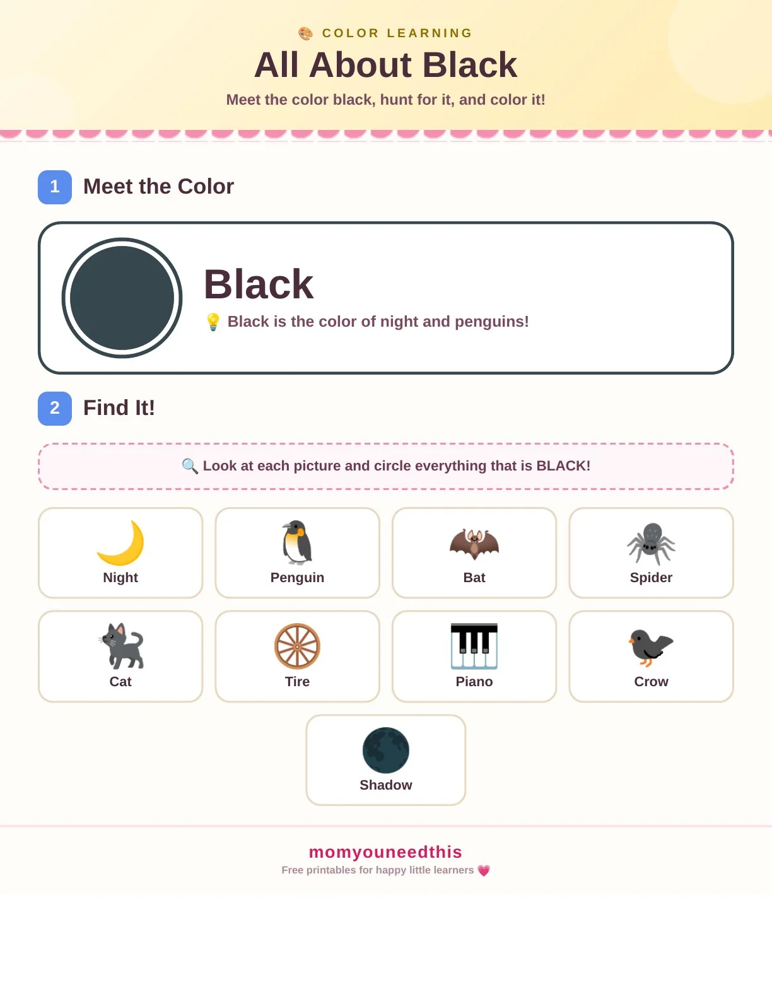

Black Color Worksheets For Kids Practice Identifying And Naming The Color Black
Bold as midnight — these black worksheets help your child recognize the color black in animals, night skies, and everyday objects.
Quick Answer
This free printable black color worksheet helps toddlers and preschoolers learn to identify and name the color black. Kids find, trace, and explore black objects like penguins and the night sky. Black is the boldest color to learn — the darkest of all, and the one that makes every other color pop beside it. Download and print at home with no signup needed — bold color learning for ages 2 to 4.
At a Glance
- Ages: Toddlers and preschoolers
- Activity: Finding, tracing and coloring black objects
- Skills: Color recognition: black
- Format: Printable worksheets (PDF)
- Cost: Free, no signup
⚫ Learn The Color Black
Black is the color of contrast. It is what outlines are drawn in, what the night sky wears, and what makes a penguin look dressed for a party. Because black sits at the extreme end of dark, it is one of the easiest colors for young eyes to pick out — babies are drawn to high contrast before they can see most colors clearly, which makes black a surprisingly early color to truly know.
This worksheet leans into that boldness: black-object finding, tracing the word black, and high-contrast activities where black does what it does best — stand out. Work through it near bedtime if you can; the night-sky spotting game in the tips below lands differently when the sky outside is actually black.

🖨️ Download Your Free Black Color Printable
Print it out, grab the crayons, and you're ready — no signup needed.
⬇️ Download Free Printable 🖨️ Print(opens in new tab)🎁 Free printable for toddlers & preschoolers
🔍 Look At The Night Sky
Peek at the night sky together and talk about its black color. Connecting the worksheet to a real nighttime moment makes black unforgettable — the sky is the biggest black thing a child will ever see, and it arrives on schedule every single evening.
Daytime finds keep the game going: penguins in picture books, tires, piano keys, a black cat if the neighborhood provides one, and the outlines in every coloring book your child owns. Ask the detective question: “is it really black, or just dark?” Shadows fail the test — they are gray pretending — and learning that difference is real color science.
💡 Why Learn Colors One At A Time?
Black and white teach the concept of opposites and contrast — foundational ideas that help children describe light, dark, and everything between. A child who owns black as a concept owns one end of the scale every other shade is measured against.
Learning colors one at a time prevents confusion, and black is the anchor color: it cannot be mistaken for anything else once the shadow question is settled. Pair it next with white and gray and your child has the whole dark-to-light scale — the in-between color gray only makes sense once black is solid.
📚 Keep Exploring
Discover more free color activities, printables, and learning ideas created for busy parents.
🎁 Back to Color Identification⬛ All About Black — The Color Of Night And Outlines
Black is the darkest color there is — so dark that artists and scientists describe it as the absence of light. Everything a child has ever outlined, every letter on this page, every line in their coloring books is black doing its everyday job: making shapes visible. That is why the black crayon runs out first in every box.
Black's animal ambassadors are the best in the color set: penguins in their tuxedos, black bears, black cats, crows, and the stripes that make a zebra a zebra. Its other home is the sky — night is black, outer space is black, and the inside of a cave or a closed closet is black, which gives children a testable definition: where there is no light, there is black.
A spotting game with stakes: black is also the trickiest color to photograph and the easiest to lose things against — a black sock on a black rug is invisible. Play “black hunt” in one room for two minutes and count the finds; then try finding a dropped black crayon on a dark floor together and laugh about camouflage. Contrast cuts both ways, and noticing that is the lesson.
❓ Frequently Asked Questions
What is on the black color worksheet?
Black-object finding and tracing the word black, plus bold high-contrast activities — all about the color black. Kids explore black in penguins, the night sky, and the outlines of every picture they color. Kids explore black in penguins, the night sky, and the outlines of every picture they color.
Are these color worksheets really free?
Yes — every printable on MomYouNeedThis is 100% free to download and print. No signup, no payment, just tap the download button. The black worksheet prints beautifully (it is mostly outlines and bold shapes) and pairs naturally with the white and gray pages for a dark-to-light set. The black worksheet prints beautifully (it is mostly outlines and bold shapes) and pairs naturally with the white and gray pages for a dark-to-light set.
Will black crayon cover the whole page?
They can point to black objects when asked and name the color black without prompting — and the mastery sign for this color is the shadow test: they stop calling every dark thing black, and can tell you a shadow is really gray. The worksheet activities make that distinction visible, which is why black is “known” a little differently from the bright colors.
💜 More Color Fun You'll Love
Keep the color learning going with these related activities.
⚪ White Color Gray Color 🟤 Brown Color